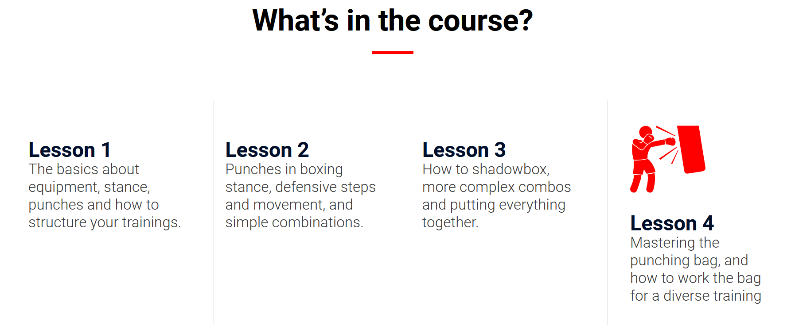

Increased speed and agility. Boxers have to have fast reactions and be quick on their feet, so their training includes lots of speedwork. Improved cardiovascular endurance. Boxing is a high intensity sport, and boxing workouts incorporate a lot of cardio and conditioning. Total body workout. While it may seem that boxing mostly uses the upper body, the lower body and core are heavily involved too, so training like a boxer involves strengthening and conditioning the entire body.
A good boxing workout routine should combine a few different kind of exercises: Boxing drills. These replicate the moves you’ll use in boxing and help to improve your speed, coordination and skill Cardiovascular exercises. Boxers need to have a high level of cardio endurance, so cardio exercises are a must. HIIT workouts are a great way to replicate the anaerobic demands of boxing. Strength exercises. Boxers need a good level of strength and power to deliver their blows. Strength training is a great way to build on this. Core exercises. Boxers require a strong core to help power their punches and remain stable when in a fight. Single arm overhead kettlebell march
GYM WORKOUTES: Barbell squats. This is a lower body exercise that strengthens the quads, glutes, calves, hamstrings, and core. Push ups. Push ups strengthen the chest, shoulders, triceps, core, and quads. It’s great for pushing power, which can help with your punches. Bench press. The weights alternative to a push up, the bench press is a great way to progressively overload the chest and shoulder muscles. Deadlifts. Deadlifts strengthen the posterior chain including glutes, hamstrings, and back, and can help build power. It’ll also compliment boxing training which often focuses on the anterior chain. Pull ups. Pull ups work the back, biceps, forearms, and core, and can help to stabilise the shoulders which is useful for boxers. Overhead press. Shoulder presses strengthen the shoulders and core, key areas for boxing.
Boxing drills. These replicate the moves you’ll use in boxing and help to improve your speed, coordination and skill. Cardiovascular exercises. Boxers need to have a high level of cardio endurance, so cardio exercises are a must. HIIT workouts are a great way to replicate the anaerobic demands of boxing. Strength exercises. Boxers need a good level of strength and power to deliver their blows. Strength training is a great way to build on this. Core exercises. Boxers require a strong core to help power their punches and remain stable when in a fight.
This HIIT style workout incorporates boxing drills with high intensity cardio moves for a challenging cardio workout that will improve your boxing. For a boxing workout at home, you can leave the jump rope exercise out or swap it for something else. Remember to really push yourself during the work intervals, and rest fully during the rest periods! Warm up 5 minutes of dynamic exercises such as jumping jacks, squat jumps, arm swings, and leg swings. Workout Do 40 seconds of each exercise, followed by 20 seconds rest. Repeat the circuit 3-4 times.
Successful pressure fighters tend to have a good "chin", as this style involves entering the punching range of their opponent before they can maneuver inside where they are more effective.[3] Pressure fighters are often either fighters of smaller stature or fighters with shorter reaches, as these fighters more frequently have to get inside of their opponent's punching range to land punches, though this is not a rule and there are examples of pressure fighters of all sizes and body types. Commonly known pressure fighters are: Henry Armstrong Marco Antonio Barrera Nigel Benn Julio Cesar Chavez Isaac Cruz Jack Dempsey Roberto Duran Joe Frazier Gennady Golovkin Wilfredo Gomez Roman Gonzalez Harry Greb Ricky Hatton Naoya Inoue Jake Lamotta Marcos Maidana Rocky Marciano Manny Pacquiao Aaron Pryor Salvador Sanchez Katie Taylor Mike Tyson